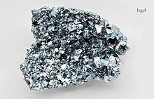

Osmium
|  | |||||||||||||||||||||||||||||||||||||||||||||||||||||||||||||||||||||||||||||||||||||||||||||||||||||||||||||||||||||||||||||||||||||||||||||||||||||||||||||||||||||||||||||||||||||||||||||||||||||||||||||||||||||||||||||||||||||
| General properties | |||||||||||||||||||||||||||||||||||||||||||||||||||||||||||||||||||||||||||||||||||||||||||||||||||||||||||||||||||||||||||||||||||||||||||||||||||||||||||||||||||||||||||||||||||||||||||||||||||||||||||||||||||||||||||||||||||||
|---|---|---|---|---|---|---|---|---|---|---|---|---|---|---|---|---|---|---|---|---|---|---|---|---|---|---|---|---|---|---|---|---|---|---|---|---|---|---|---|---|---|---|---|---|---|---|---|---|---|---|---|---|---|---|---|---|---|---|---|---|---|---|---|---|---|---|---|---|---|---|---|---|---|---|---|---|---|---|---|---|---|---|---|---|---|---|---|---|---|---|---|---|---|---|---|---|---|---|---|---|---|---|---|---|---|---|---|---|---|---|---|---|---|---|---|---|---|---|---|---|---|---|---|---|---|---|---|---|---|---|---|---|---|---|---|---|---|---|---|---|---|---|---|---|---|---|---|---|---|---|---|---|---|---|---|---|---|---|---|---|---|---|---|---|---|---|---|---|---|---|---|---|---|---|---|---|---|---|---|---|---|---|---|---|---|---|---|---|---|---|---|---|---|---|---|---|---|---|---|---|---|---|---|---|---|---|---|---|---|---|---|---|---|---|---|---|---|---|---|---|---|---|---|---|---|---|---|---|---|
| Name, symbol | osmium, Os | ||||||||||||||||||||||||||||||||||||||||||||||||||||||||||||||||||||||||||||||||||||||||||||||||||||||||||||||||||||||||||||||||||||||||||||||||||||||||||||||||||||||||||||||||||||||||||||||||||||||||||||||||||||||||||||||||||||
| Pronunciation | /ˈɒzmiəm/ OZ-mee-əm |
||||||||||||||||||||||||||||||||||||||||||||||||||||||||||||||||||||||||||||||||||||||||||||||||||||||||||||||||||||||||||||||||||||||||||||||||||||||||||||||||||||||||||||||||||||||||||||||||||||||||||||||||||||||||||||||||||||
| Appearance | silvery, blue cast | ||||||||||||||||||||||||||||||||||||||||||||||||||||||||||||||||||||||||||||||||||||||||||||||||||||||||||||||||||||||||||||||||||||||||||||||||||||||||||||||||||||||||||||||||||||||||||||||||||||||||||||||||||||||||||||||||||||
| Osmium in the periodic table | |||||||||||||||||||||||||||||||||||||||||||||||||||||||||||||||||||||||||||||||||||||||||||||||||||||||||||||||||||||||||||||||||||||||||||||||||||||||||||||||||||||||||||||||||||||||||||||||||||||||||||||||||||||||||||||||||||||
|
|||||||||||||||||||||||||||||||||||||||||||||||||||||||||||||||||||||||||||||||||||||||||||||||||||||||||||||||||||||||||||||||||||||||||||||||||||||||||||||||||||||||||||||||||||||||||||||||||||||||||||||||||||||||||||||||||||||
| Atomic number | 76 | ||||||||||||||||||||||||||||||||||||||||||||||||||||||||||||||||||||||||||||||||||||||||||||||||||||||||||||||||||||||||||||||||||||||||||||||||||||||||||||||||||||||||||||||||||||||||||||||||||||||||||||||||||||||||||||||||||||
| Standard atomic weight (±) | 190.23(3)[1] | ||||||||||||||||||||||||||||||||||||||||||||||||||||||||||||||||||||||||||||||||||||||||||||||||||||||||||||||||||||||||||||||||||||||||||||||||||||||||||||||||||||||||||||||||||||||||||||||||||||||||||||||||||||||||||||||||||||
| Element category | transition metal | ||||||||||||||||||||||||||||||||||||||||||||||||||||||||||||||||||||||||||||||||||||||||||||||||||||||||||||||||||||||||||||||||||||||||||||||||||||||||||||||||||||||||||||||||||||||||||||||||||||||||||||||||||||||||||||||||||||
| Group, block | group 8, d-block | ||||||||||||||||||||||||||||||||||||||||||||||||||||||||||||||||||||||||||||||||||||||||||||||||||||||||||||||||||||||||||||||||||||||||||||||||||||||||||||||||||||||||||||||||||||||||||||||||||||||||||||||||||||||||||||||||||||
| Period | period 6 | ||||||||||||||||||||||||||||||||||||||||||||||||||||||||||||||||||||||||||||||||||||||||||||||||||||||||||||||||||||||||||||||||||||||||||||||||||||||||||||||||||||||||||||||||||||||||||||||||||||||||||||||||||||||||||||||||||||
| Electron configuration | [Xe] 4f14 5d6 6s2 | ||||||||||||||||||||||||||||||||||||||||||||||||||||||||||||||||||||||||||||||||||||||||||||||||||||||||||||||||||||||||||||||||||||||||||||||||||||||||||||||||||||||||||||||||||||||||||||||||||||||||||||||||||||||||||||||||||||
| per shell | 2, 8, 18, 32, 14, 2 | ||||||||||||||||||||||||||||||||||||||||||||||||||||||||||||||||||||||||||||||||||||||||||||||||||||||||||||||||||||||||||||||||||||||||||||||||||||||||||||||||||||||||||||||||||||||||||||||||||||||||||||||||||||||||||||||||||||
| Physical properties | |||||||||||||||||||||||||||||||||||||||||||||||||||||||||||||||||||||||||||||||||||||||||||||||||||||||||||||||||||||||||||||||||||||||||||||||||||||||||||||||||||||||||||||||||||||||||||||||||||||||||||||||||||||||||||||||||||||
| Phase | solid | ||||||||||||||||||||||||||||||||||||||||||||||||||||||||||||||||||||||||||||||||||||||||||||||||||||||||||||||||||||||||||||||||||||||||||||||||||||||||||||||||||||||||||||||||||||||||||||||||||||||||||||||||||||||||||||||||||||
| Melting point | 3306 K (3033 °C, 5491 °F) | ||||||||||||||||||||||||||||||||||||||||||||||||||||||||||||||||||||||||||||||||||||||||||||||||||||||||||||||||||||||||||||||||||||||||||||||||||||||||||||||||||||||||||||||||||||||||||||||||||||||||||||||||||||||||||||||||||||
| Boiling point | 5285 K (5012 °C, 9054 °F) | ||||||||||||||||||||||||||||||||||||||||||||||||||||||||||||||||||||||||||||||||||||||||||||||||||||||||||||||||||||||||||||||||||||||||||||||||||||||||||||||||||||||||||||||||||||||||||||||||||||||||||||||||||||||||||||||||||||
| Density near r.t. | 22.59 g·cm−3 | ||||||||||||||||||||||||||||||||||||||||||||||||||||||||||||||||||||||||||||||||||||||||||||||||||||||||||||||||||||||||||||||||||||||||||||||||||||||||||||||||||||||||||||||||||||||||||||||||||||||||||||||||||||||||||||||||||||
| when liquid, at m.p. | 20 g·cm−3 | ||||||||||||||||||||||||||||||||||||||||||||||||||||||||||||||||||||||||||||||||||||||||||||||||||||||||||||||||||||||||||||||||||||||||||||||||||||||||||||||||||||||||||||||||||||||||||||||||||||||||||||||||||||||||||||||||||||
| Heat of fusion | 57.85 kJ·mol−1 | ||||||||||||||||||||||||||||||||||||||||||||||||||||||||||||||||||||||||||||||||||||||||||||||||||||||||||||||||||||||||||||||||||||||||||||||||||||||||||||||||||||||||||||||||||||||||||||||||||||||||||||||||||||||||||||||||||||
| Heat of vaporization | 378 kJ·mol−1 | ||||||||||||||||||||||||||||||||||||||||||||||||||||||||||||||||||||||||||||||||||||||||||||||||||||||||||||||||||||||||||||||||||||||||||||||||||||||||||||||||||||||||||||||||||||||||||||||||||||||||||||||||||||||||||||||||||||
| Molar heat capacity | 24.7 J·mol−1·K−1 | ||||||||||||||||||||||||||||||||||||||||||||||||||||||||||||||||||||||||||||||||||||||||||||||||||||||||||||||||||||||||||||||||||||||||||||||||||||||||||||||||||||||||||||||||||||||||||||||||||||||||||||||||||||||||||||||||||||
vapor pressure
|
|||||||||||||||||||||||||||||||||||||||||||||||||||||||||||||||||||||||||||||||||||||||||||||||||||||||||||||||||||||||||||||||||||||||||||||||||||||||||||||||||||||||||||||||||||||||||||||||||||||||||||||||||||||||||||||||||||||
| Atomic properties | |||||||||||||||||||||||||||||||||||||||||||||||||||||||||||||||||||||||||||||||||||||||||||||||||||||||||||||||||||||||||||||||||||||||||||||||||||||||||||||||||||||||||||||||||||||||||||||||||||||||||||||||||||||||||||||||||||||
| Oxidation states | 8, 7, 6, 5, 4, 3, 2, 1, 0, −1, −2 (a mildly acidic oxide) | ||||||||||||||||||||||||||||||||||||||||||||||||||||||||||||||||||||||||||||||||||||||||||||||||||||||||||||||||||||||||||||||||||||||||||||||||||||||||||||||||||||||||||||||||||||||||||||||||||||||||||||||||||||||||||||||||||||
| Electronegativity | Pauling scale: 2.2 | ||||||||||||||||||||||||||||||||||||||||||||||||||||||||||||||||||||||||||||||||||||||||||||||||||||||||||||||||||||||||||||||||||||||||||||||||||||||||||||||||||||||||||||||||||||||||||||||||||||||||||||||||||||||||||||||||||||
| Ionization energies | 1st: 840 kJ·mol−1 2nd: 1600 kJ·mol−1 |
||||||||||||||||||||||||||||||||||||||||||||||||||||||||||||||||||||||||||||||||||||||||||||||||||||||||||||||||||||||||||||||||||||||||||||||||||||||||||||||||||||||||||||||||||||||||||||||||||||||||||||||||||||||||||||||||||||
| Atomic radius | empirical: 135 pm | ||||||||||||||||||||||||||||||||||||||||||||||||||||||||||||||||||||||||||||||||||||||||||||||||||||||||||||||||||||||||||||||||||||||||||||||||||||||||||||||||||||||||||||||||||||||||||||||||||||||||||||||||||||||||||||||||||||
| Covalent radius | 144±4 pm | ||||||||||||||||||||||||||||||||||||||||||||||||||||||||||||||||||||||||||||||||||||||||||||||||||||||||||||||||||||||||||||||||||||||||||||||||||||||||||||||||||||||||||||||||||||||||||||||||||||||||||||||||||||||||||||||||||||
| Miscellanea | |||||||||||||||||||||||||||||||||||||||||||||||||||||||||||||||||||||||||||||||||||||||||||||||||||||||||||||||||||||||||||||||||||||||||||||||||||||||||||||||||||||||||||||||||||||||||||||||||||||||||||||||||||||||||||||||||||||
| Crystal structure | hexagonal close-packed (hcp)
|
||||||||||||||||||||||||||||||||||||||||||||||||||||||||||||||||||||||||||||||||||||||||||||||||||||||||||||||||||||||||||||||||||||||||||||||||||||||||||||||||||||||||||||||||||||||||||||||||||||||||||||||||||||||||||||||||||||
| Speed of sound thin rod | 4940 m·s−1 (at 20 °C) | ||||||||||||||||||||||||||||||||||||||||||||||||||||||||||||||||||||||||||||||||||||||||||||||||||||||||||||||||||||||||||||||||||||||||||||||||||||||||||||||||||||||||||||||||||||||||||||||||||||||||||||||||||||||||||||||||||||
| Thermal expansion | 5.1 µm·m−1·K−1 (at 25 °C) | ||||||||||||||||||||||||||||||||||||||||||||||||||||||||||||||||||||||||||||||||||||||||||||||||||||||||||||||||||||||||||||||||||||||||||||||||||||||||||||||||||||||||||||||||||||||||||||||||||||||||||||||||||||||||||||||||||||
| Thermal conductivity | 87.6 W·m−1·K−1 | ||||||||||||||||||||||||||||||||||||||||||||||||||||||||||||||||||||||||||||||||||||||||||||||||||||||||||||||||||||||||||||||||||||||||||||||||||||||||||||||||||||||||||||||||||||||||||||||||||||||||||||||||||||||||||||||||||||
| Electrical resistivity | 81.2 nΩ·m (at 0 °C) | ||||||||||||||||||||||||||||||||||||||||||||||||||||||||||||||||||||||||||||||||||||||||||||||||||||||||||||||||||||||||||||||||||||||||||||||||||||||||||||||||||||||||||||||||||||||||||||||||||||||||||||||||||||||||||||||||||||
| Magnetic ordering | paramagnetic[2] | ||||||||||||||||||||||||||||||||||||||||||||||||||||||||||||||||||||||||||||||||||||||||||||||||||||||||||||||||||||||||||||||||||||||||||||||||||||||||||||||||||||||||||||||||||||||||||||||||||||||||||||||||||||||||||||||||||||
| Shear modulus | 222 GPa | ||||||||||||||||||||||||||||||||||||||||||||||||||||||||||||||||||||||||||||||||||||||||||||||||||||||||||||||||||||||||||||||||||||||||||||||||||||||||||||||||||||||||||||||||||||||||||||||||||||||||||||||||||||||||||||||||||||
| Bulk modulus | 462 GPa | ||||||||||||||||||||||||||||||||||||||||||||||||||||||||||||||||||||||||||||||||||||||||||||||||||||||||||||||||||||||||||||||||||||||||||||||||||||||||||||||||||||||||||||||||||||||||||||||||||||||||||||||||||||||||||||||||||||
| Poisson ratio | 0.25 | ||||||||||||||||||||||||||||||||||||||||||||||||||||||||||||||||||||||||||||||||||||||||||||||||||||||||||||||||||||||||||||||||||||||||||||||||||||||||||||||||||||||||||||||||||||||||||||||||||||||||||||||||||||||||||||||||||||
| Mohs hardness | 7.0 | ||||||||||||||||||||||||||||||||||||||||||||||||||||||||||||||||||||||||||||||||||||||||||||||||||||||||||||||||||||||||||||||||||||||||||||||||||||||||||||||||||||||||||||||||||||||||||||||||||||||||||||||||||||||||||||||||||||
| Brinell hardness | 3490–4000 MPa | ||||||||||||||||||||||||||||||||||||||||||||||||||||||||||||||||||||||||||||||||||||||||||||||||||||||||||||||||||||||||||||||||||||||||||||||||||||||||||||||||||||||||||||||||||||||||||||||||||||||||||||||||||||||||||||||||||||
| CAS Registry Number | 7440-04-2 | ||||||||||||||||||||||||||||||||||||||||||||||||||||||||||||||||||||||||||||||||||||||||||||||||||||||||||||||||||||||||||||||||||||||||||||||||||||||||||||||||||||||||||||||||||||||||||||||||||||||||||||||||||||||||||||||||||||
| History | |||||||||||||||||||||||||||||||||||||||||||||||||||||||||||||||||||||||||||||||||||||||||||||||||||||||||||||||||||||||||||||||||||||||||||||||||||||||||||||||||||||||||||||||||||||||||||||||||||||||||||||||||||||||||||||||||||||
| Discovery and first isolation | Smithson Tennant (1803) | ||||||||||||||||||||||||||||||||||||||||||||||||||||||||||||||||||||||||||||||||||||||||||||||||||||||||||||||||||||||||||||||||||||||||||||||||||||||||||||||||||||||||||||||||||||||||||||||||||||||||||||||||||||||||||||||||||||
| Most stable isotopes | |||||||||||||||||||||||||||||||||||||||||||||||||||||||||||||||||||||||||||||||||||||||||||||||||||||||||||||||||||||||||||||||||||||||||||||||||||||||||||||||||||||||||||||||||||||||||||||||||||||||||||||||||||||||||||||||||||||
|
|||||||||||||||||||||||||||||||||||||||||||||||||||||||||||||||||||||||||||||||||||||||||||||||||||||||||||||||||||||||||||||||||||||||||||||||||||||||||||||||||||||||||||||||||||||||||||||||||||||||||||||||||||||||||||||||||||||
| Decay modes in parentheses are predicted, but have not yet been observed | |||||||||||||||||||||||||||||||||||||||||||||||||||||||||||||||||||||||||||||||||||||||||||||||||||||||||||||||||||||||||||||||||||||||||||||||||||||||||||||||||||||||||||||||||||||||||||||||||||||||||||||||||||||||||||||||||||||
{kind=link}
Osmium (from Greek osme (ὀσμή) meaning "smell") is a chemical element with symbol Os and atomic number 76. It is a hard, brittle, bluish-white transition metal in the platinum group that is found as a trace element in alloys, mostly in platinum ores. Osmium is the densest naturally occurring element, with a density of 22.59 g/cm3. Its alloys with platinum, iridium, and other platinum group metals are employed in fountain pen nibs, electrical contacts, and other applications where extreme durability and hardness are needed.[3]
Contents
[hide]Characteristics[edit]
Physical properties[edit]
{kind=link}
Osmium has a blue-gray tint and is the densest stable element, slightly denser than iridium.[4] Calculations of density from the X-ray diffraction data may produce the most reliable data for these elements, giving a value of 22.562±0.009 g/cm3 for iridium versus 22.587±0.009 g/cm3 for osmium.[5]
Osmium is a hard but brittle metal that remains lustrous even at high temperatures. It has a very low compressibility. Correspondingly, its bulk modulus is extremely high, reported between 395 and 462 GPa, which rivals that of diamond (443 GPa). The hardness of osmium is moderately high at 4 GPa.[6][7][8] Because of its hardness, brittleness, low vapor pressure (the lowest of the platinum group metals), and very high melting point (the fourth highest of all elements), solid osmium is difficult to machine, form, or work.
Chemical properties[edit]
| Oxidation states of osmium | |
|---|---|
| −2 | Na 2[Os(CO) 4] |
| −1 | Na 2[Os 4(CO) 13] |
| 0 | Os 3(CO) 12 |
| +1 | OsI |
| +2 | OsI 2 |
| +3 | OsBr 3 |
| +4 | OsO 2, OsCl 4 |
| +5 | OsF 5 |
| +6 | OsF 6 |
| +7 | OsOF 5 |
| +8 | OsO 4, Os(NCH3) 4 |
Osmium forms compounds with oxidation states
ranging from −2 to +8. The most common oxidation states are +2, +3, +4,
and +8. The +8 oxidation state is notable for being the highest
attained by any chemical element aside from iridium's +9,[9] and is encountered only in xenon,[10][11] ruthenium,[12] hassium,[13] iridium,[14] plutonium,[15] and curium (uncertain).[16] The oxidation states −1 and −2 represented by the two reactive compounds Na
2[Os
4(CO)
13] and Na
2[Os(CO)
4] are used in the synthesis of osmium cluster compounds.[17][18]
The most common compound exhibiting the +8 oxidation state is osmium tetroxide.
This toxic compound is formed when powdered osmium is exposed to air,
and is a very volatile, water-soluble, pale yellow, crystalline solid
with a strong smell. Osmium powder has the characteristic smell of
osmium tetroxide.[19] Osmium tetroxide forms red osmates OsO
4(OH)2−
2 upon reaction with a base. With ammonia, it forms the nitrido-osmates OsO
3N−
.[20][21][22] Osmium tetroxide boils at 130 °C and is a powerful oxidizing agent. By contrast, osmium dioxide (OsO2) is black, non-volatile, and much less reactive and toxic.
Only two osmium compounds have major applications: osmium tetroxide for staining tissue in electron microscopy and for the oxidation of alkenes in organic synthesis, and the non-volatile osmates for organic oxidation reactions.[23]
Osmium pentafluoride (OsF5) is known, but osmium trifluoride (OsF3)
has not yet been synthesized. The lower oxidation states are stabilized
by the larger halogens, so that the trichloride, tribromide, triiodide,
and even diiodide are known. The oxidation state +1 is known only for
osmium iodide (OsI), whereas several carbonyl complexes of osmium, such
as triosmium dodecacarbonyl (Os
3(CO)
12), represent oxidation state 0.[20][21][24][25]
In general, the lower oxidation states of osmium are stabilized by ligands that are good σ-donors (such as amines) and π-acceptors (heterocycles containing nitrogen). The higher oxidation states are stabilized by strong σ- and π-donors, such as O2−
and N3−
.[26]
Despite its broad range of compounds in numerous oxidation states, osmium in bulk form at ordinary temperatures and pressures resists attack by all acids and alkalis, and even aqua regia.
Isotopes[edit]
Osmium has seven naturally occurring isotopes, six of which are stable: 184
Os, 187
Os, 188
Os, 189
Os, 190
Os, and (most abundant) 192
Os. 186
Os undergoes alpha decay with such a long half-life ((2.0±1.1)×1015 years)
that for practical purposes it can be considered stable. Alpha decay is
predicted for all seven naturally occurring isotopes, but it has been
observed only for 186
Os, presumably due to very long half-lives. It is predicted that 184
Os and 192
Os can undergo double beta decay but this radioactivity has not been observed yet.[27]
187
Os is the daughter of 187
Re (half-life 4.56×1010 years) and is used extensively in dating terrestrial as well as meteoric rocks (see rhenium-osmium dating).
It has also been used to measure the intensity of continental
weathering over geologic time and to fix minimum ages for stabilization
of the mantle roots of continental cratons. This decay is a reason why rhenium-rich minerals are abnormally rich in 187
Os.[28]
However, the most notable application of Os isotopes in geology has
been in conjunction with the abundance of iridium, to characterise the
layer of shocked quartz along the Cretaceous–Paleogene boundary that marks the extinction of the dinosaurs 66 million years ago.[29]
History[edit]
Osmium was discovered in 1803 by Smithson Tennant and William Hyde Wollaston in London, England.[30] The discovery of osmium is intertwined with that of platinum and the other metals of the platinum group. Platinum reached Europe as platina ("small silver"), first encountered in the late 17th century in silver mines around the Chocó Department, in Colombia.[31] The discovery that this metal was not an alloy, but a distinct new element, was published in 1748.[32] Chemists who studied platinum dissolved it in aqua regia (a mixture of hydrochloric and nitric acids) to create soluble salts. They always observed a small amount of a dark, insoluble residue.[33] Joseph Louis Proust thought that the residue was graphite.[33] Victor Collet-Descotils, Antoine François, comte de Fourcroy, and Louis Nicolas Vauquelin also observed the black residue in 1803, but did not obtain enough material for further experiments.[33]
In 1803, Smithson Tennant analyzed the insoluble residue and concluded that it must contain a new metal. Vauquelin treated the powder alternately with alkali and acids[34] and obtained a volatile new oxide, which he believed to be of this new metal—which he named ptene, from the Greek word πτηνος (ptènos) for winged.[35][36] However, Tennant, who had the advantage of a much larger amount of residue, continued his research and identified two previously undiscovered elements in the black residue, iridium and osmium.[33][34] He obtained a yellow solution (probably of cis–[Os(OH)2O4]2−) by reactions with sodium hydroxide at red heat. After acidification he was able to distill the formed OsO4.[35] He named it osmium after Greek osme meaning "a smell", because of the ashy and smoky smell of the volatile osmium tetroxide.[37] Discovery of the new elements was documented in a letter to the Royal Society on June 21, 1804.[33][38]
Uranium and osmium were early successful catalysts in the Haber process, the nitrogen fixation reaction of nitrogen and hydrogen to produce ammonia, giving enough yield to make the process economically successful. At the time, a group at BASF led by Carl Bosch bought most of the world's supply of osmium to use as a catalyst. Shortly thereafter, in 1908, cheaper catalysts based on iron and iron oxides were introduced by the same group for the first pilot plants, removing the need for the expensive and rare osmium.[39]
Nowadays osmium is obtained primarily from the processing of platinum and nickel ores.[40]
Occurrence[edit]
{kind=link}
Osmium is the least abundant stable element in Earth's crust with an average mass fraction of 50 parts per trillion in the continental crust.[41]
Osmium is found in nature as an uncombined element or in natural alloys; especially the iridium–osmium alloys, osmiridium (osmium rich), and iridosmium (iridium rich).[34] In nickel and copper deposits, the platinum group metals occur as sulfides (i.e., (Pt,Pd)S)), tellurides (e.g., PtBiTe), antimonides (e.g., PdSb), and arsenides (e.g., PtAs2); in all these compounds platinum is exchanged by a small amount of iridium and osmium. As with all of the platinum group metals, osmium can be found naturally in alloys with nickel or copper.[42]
Within Earth's crust, osmium, like iridium, is found at highest concentrations in three types of geologic structure: igneous deposits (crustal intrusions from below), impact craters, and deposits reworked from one of the former structures. The largest known primary reserves are in the Bushveld igneous complex in South Africa,[43] though the large copper–nickel deposits near Norilsk in Russia, and the Sudbury Basin in Canada are also significant sources of osmium. Smaller reserves can be found in the United States.[43] The alluvial deposits used by pre-Columbian people in the Chocó Department, Colombia are still a source for platinum group metals. The second large alluvial deposit was found in the Ural Mountains, Russia, which is still mined.[40][44]
Production[edit]
{kind=link}
Osmium is obtained commercially as a by-product from nickel and copper mining and processing. During electrorefining of copper and nickel, noble metals such as silver, gold and the platinum group metals, together with non-metallic elements such as selenium and tellurium settle to the bottom of the cell as anode mud, which forms the starting material for their extraction.[45][46]
In order to separate the metals, they must first be brought into
solution. Several methods are available depending on the separation
process and the composition of the mixture; two representative methods
are fusion with sodium peroxide followed by dissolution in aqua regia, and dissolution in a mixture of chlorine with hydrochloric acid.[43][47]
Osmium, ruthenium, rhodium and iridium can be separated from platinum,
gold and base metals by their insolubility in aqua regia, leaving a
solid residue. Rhodium can be separated from the residue by treatment
with molten sodium bisulfate. The insoluble residue, containing Ru, Os and Ir, is treated with sodium oxide, in which Ir is insoluble, producing water-soluble Ru and Os salts. After oxidation to the volatile oxides, RuO
4 is separated from OsO
4 by precipitation of (NH4)3RuCl6 with ammonium chloride.
After it is dissolved, osmium is separated from the other platinum group metals by distillation or extraction with organic solvents of the volatile osmium tetroxide.[48] The first method is similar to the procedure used by Tennant and Wollaston. Both methods are suitable for industrial scale production. In either case, the product is reduced using hydrogen, yielding the metal as a powder or sponge that can be treated using powder metallurgy techniques.[49]
Neither the producers nor the United States Geological Survey published any production amounts for osmium. Estimations of the United States consumption date published from 1971,[50] which gives a consumption in the United States of 2000 troy ounces (62 kg), would suggest that the production is still less than 1 ton per year. In 2012, the estimated US production of osmium was 75 kg.[51]
Applications[edit]
Because of the volatility and extreme toxicity of its oxide, osmium is rarely used in its pure state, and is instead often alloyed with other metals. Those alloys are utilized in high-wear applications. Osmium alloys such as osmiridium are very hard and, along with other platinum group metals, are used in the tips of fountain pens, instrument pivots, and electrical contacts, as they can resist wear from frequent operation. They were also used for the tips of phonograph styli during the late 78 rpm and early "LP" and "45" record era, circa 1945 to 1955. Although very durable compared to steel and chromium needle points, osmium alloy tips wore out far more rapidly than competing but costlier sapphire and diamond tips and were discontinued.[52]
Osmium tetroxide has been used in fingerprint detection[53] and in staining fatty tissue for optical and electron microscopy. As a strong oxidant, it cross-links lipids mainly by reacting with unsaturated carbon-carbon bonds, and thereby both fixes biological membranes in place in tissue samples and simultaneously stains them. Because osmium atoms are extremely electron dense, osmium staining greatly enhances image contrast in transmission electron microscopy (TEM) studies of biological materials. Those carbon materials have otherwise very weak TEM contrast (see image).[23] Another osmium compound, osmium ferricyanide (OsFeCN), exhibits similar fixing and staining action.[54]
The tetroxide and a related compound, potassium osmate, are important oxidants for chemical synthesis, despite being very poisonous. For the Sharpless asymmetric dihydroxylation, which uses osmate for the conversion of a double bond into a vicinal diol, Karl Barry Sharpless won the Nobel Prize in Chemistry in 2001.[55][56] Apparently, OsO4 is very expensive for this use, so KMnO4 is often used instead, even though the yields are less for this cheaper chemical reagent.[57]
In 1898 an Austrian chemist, Auer von Welsbach, developed the Oslamp with a filament made of osmium, which he introduced commercially in 1902. After only a few years, osmium was replaced by the more stable metal tungsten. Tungsten has the highest melting point of any metal, and using it in light bulbs increases the luminous efficacy and life of incandescent lamps.[35]
The light bulb manufacturer Osram (founded in 1906 when three German companies, Auer-Gesellschaft, AEG and Siemens & Halske, combined their lamp production facilities) derived its name from the elements of osmium and Wolfram (the latter is German for tungsten).[58]
Like palladium, powdered osmium effectively absorbs hydrogen atoms. This could make osmium a potential candidate for a metal hydride battery electrode. However, osmium is expensive and would react with potassium hydroxide, the most common battery electrolyte.[59]
Osmium has high reflectivity in the ultraviolet range of the electromagnetic spectrum; for example, at 600 Å osmium has a reflectivity twice that of gold.[60] This high reflectivity is desirable in space-based UV spectrometers which have reduced mirror sizes due to space limitations. Osmium-coated mirrors were flown in several space missions aboard the Space Shuttle, but it soon became clear that the oxygen radicals in the low earth orbit are abundant enough to significantly deteriorate the osmium layer.[61]
The only known clinical use of osmium appears to be for synovectomy in arthritic patients in Scandinavia.[62] It involves the local administration of osmium tetroxide (OsO4) which is a highly toxic compound. The lack of reports of long-term side effects suggest that osmium itself can be biocompatible, although this depends on the osmium compound administered. In 2011, osmium(VI)[63] and osmium(II) [64] compounds were reported to show anticancer activity in vivo, it indicated a promising future for using osmium compounds as anticancer drugs.[65]
-
Electron micrograph of (organic) plant tissue without (top) and with (bottom) OsO4 staining
-
The Sharpless dihydroxylation:
RL=Largest substituent; RM=Medium-sized substituent; RS=Smallest substituent
{kind=link}
{kind=link}
{kind=link}
Precautions[edit]
Finely divided metallic osmium is pyrophoric[50] and reacts with oxygen at room temperature forming volatile osmium tetroxide. Some osmium compounds are also converted to the tetroxide if oxygen is present.[50] This makes osmium tetroxide the main source of contact with the environment.
Osmium tetroxide is highly volatile and penetrates skin readily, and is very toxic by inhalation, ingestion, and skin contact.[68] Airborne low concentrations of osmium tetroxide vapor can cause lung congestion and skin or eye damage, and should therefore be used in a fume hood.[19] Osmium tetroxide is rapidly reduced to relatively inert compounds by polyunsaturated vegetable oils, such as corn oil.[69]
Price[edit]
Osmium is usually sold as a minimum 99.9% pure powder. Like other precious metals, it is measured by troy weight and by grams. Its price in 2012 was about $400 per troy ounce (or about $13,000 per kilogram), depending on the quantity and its supplier.[70][71]
References[edit]
- Jump up ^ Standard Atomic Weights 2013. Commission on Isotopic Abundances and Atomic Weights
- Jump up ^ Lide, D. R., ed. (2005). "Magnetic susceptibility of the elements and inorganic compounds". CRC Handbook of Chemistry and Physics (PDF) (86th ed.). Boca Raton (FL): CRC Press. ISBN 0-8493-0486-5.
- Jump up ^ Hammond "Osmium", C. R., p. 4–25 in Lide, D. R., ed. (2005). CRC Handbook of Chemistry and Physics (86th ed.). Boca Raton (FL): CRC Press. ISBN 0-8493-0486-5.
- Jump up ^ Arblaster, J. W. (1989). "Densities of osmium and iridium: recalculations based upon a review of the latest crystallographic data" (PDF). Platinum Metals Review 33 (1): 14–16.
- Jump up ^ Arblaster, J. W. (1995). "Osmium, the Densest Metal Known". Platinum Metals Review 39 (4): 164.
- Jump up ^ Weinberger, Michelle; Tolbert, Sarah; Kavner, Abby (2008). "Osmium Metal Studied under High Pressure and Nonhydrostatic Stress". Phys. Rev. Lett. 100 (4): 045506. Bibcode:2008PhRvL.100d5506W. doi:10.1103/PhysRevLett.100.045506. PMID 18352299.
- Jump up ^ Cynn, Hyunchae; Klepeis, J. E.; Yeo, C. S.; Young, D. A. (2002). "Osmium has the Lowest Experimentally Determined Compressibility". Physical Review Letters 88 (13): 135701. Bibcode:2002PhRvL..88m5701C. doi:10.1103/PhysRevLett.88.135701. PMID 11955108.
- Jump up ^ Sahu, B. R.; Kleinman, L. (2005). "Osmium Is Not Harder Than Diamond". Physical Review B 72 (11): 113106. Bibcode:2005PhRvB..72k3106S. doi:10.1103/PhysRevB.72.113106.
- Jump up ^ "Iridium forms compound in +9 oxidation state".
- Jump up ^ Selig, H.; Claassen, H. H.; Chernick, C. L.; Malm, J. G. et al. (1964). "Xenon tetroxide – Preparation + Some Properties". Science 143 (3612): 1322–3. Bibcode:1964Sci...143.1322S. doi:10.1126/science.143.3612.1322. JSTOR 1713238. PMID 17799234.
- Jump up ^ Huston, J. L.; Studier, M. H.; Sloth, E. N. (1964). "Xenon tetroxide – Mass Spectrum". Science 143 (3611): 1162–3. Bibcode:1964Sci...143.1161H. doi:10.1126/science.143.3611.1161-a. JSTOR 1712675. PMID 17833897.
- Jump up ^ Barnard, C. F. J. (2004). "Oxidation States of Ruthenium and Osmium". Platinum Metals Review 48 (4): 157. doi:10.1595/147106704X10801.
- Jump up ^ "Chemistry of Hassium" (PDF). Gesellschaft für Schwerionenforschung mbH. 2002. Retrieved 2007-01-31.
- Jump up ^ Gong, Yu; Zhou, Mingfei; Kaupp, Martin; Riedel, Sebastian (2009). "Formation and Characterization of the Iridium Tetroxide Molecule with Iridium in the Oxidation State +VIII". Angewandte Chemie International Edition 48 (42): 7879. doi:10.1002/anie.200902733.
- Jump up ^ Domanov, V. P.; Lobanov, Yu. V. (February 2009). "Refinement of data on the volatility of octavalent plutonium in the form of tetraoxide PuO4". Radiochemistry (SP MAIK Nauka/Interperiodica) 51 (1): 14–17. doi:10.1134/S1066362209010044.
- Jump up ^ Domanov, V. P. (January 2013). "Possibility of generation of octavalent curium in the gas phase in the form of volatile tetraoxide CmO4". Radiochemistry (SP MAIK Nauka/Interperiodica) 55 (1): 46–51. doi:10.1134/S1066362213010098.
- Jump up ^ Krause, J.; Siriwardane, Upali; Salupo, Terese A.; Wermer, Joseph R. et al. (1993). "Preparation of [Os3(CO)11]2− and its reactions with Os3(CO)12; structures of [Et4N] [HOs3(CO)11] and H2OsS4(CO)". Journal of Organometallic Chemistry 454: 263–271. doi:10.1016/0022-328X(93)83250-Y.
- Jump up ^ Carter, Willie J.; Kelland, John W.; Okrasinski, Stanley J.; Warner, Keith E. et al. (1982). "Mononuclear hydrido alkyl carbonyl complexes of osmium and their polynuclear derivatives". Inorganic Chemistry 21 (11): 3955–3960. doi:10.1021/ic00141a019.
- ^ Jump up to: a b Mager Stellman, J. (1998). "Osmium". Encyclopaedia of Occupational Health and Safety. International Labour Organization. p. 63.34. ISBN 978-92-2-109816-4. OCLC 35279504 45066560.
- ^ Jump up to: a b Holleman, A. F.; Wiberg, E.; Wiberg, N. (2001). Inorganic Chemistry (1st ed.). Academic Press. ISBN 0-12-352651-5. OCLC 47901436.
- ^ Jump up to: a b Griffith, W. P. (1965). "Osmium and its compounds". Quarterly Review of the Chemical Society 19 (3): 254–273. doi:10.1039/QR9651900254.
- Jump up ^ Subcommittee on Platinum-Group Metals, Committee on Medical and Biologic Effects of Environmental Pollutants, Division of Medical Sciences, Assembly of Life Sciences, National Research Council (1977). Platinum-group metals. National Academy of Sciences. p. 55. ISBN 0-309-02640-7.
- ^ Jump up to: a b Bozzola, John J.; Russell, Lonnie D. (1999). "Specimen Preparation for Transmission Electron Microscopy". Electron microscopy : principles and techniques for biologists. Sudbury, Mass.: Jones and Bartlett. pp. 21–31. ISBN 978-0-7637-0192-5.
- Jump up ^ Greenwood, N. N.; Earnshaw, A. (1997). Chemistry of the Elements (2nd ed.). Oxford:Butterworth-Heinemann. pp. 1113–1143, 1294. ISBN 0-7506-3365-4. OCLC 213025882 37499934 41901113.
- Jump up ^ Gulliver, D. J; Levason, W. (1982). "The chemistry of ruthenium, osmium, rhodium, iridium, palladium and platinum in the higher oxidation states". Coordination Chemistry Reviews 46: 1–127. doi:10.1016/0010-8545(82)85001-7.
- Jump up ^ Peter A. Lay; W. Dean Harman (1992). Advances in Inorganic Chemistry. A. G. Sykes. Academic Press. p. 221. ISBN 0-12-023637-0.
- Jump up ^ Audi, G.; Bersillon, O.; Blachot, J.; Wapstra, A.H. (2003). "The NUBASE Evaluation of Nuclear and Decay Properties". Nuclear Physics A (Atomic Mass Data Center) 729: 3–128. Bibcode:2003NuPhA.729....3A. doi:10.1016/j.nuclphysa.2003.11.001.
- Jump up ^ Dąbek, Józef; Halas, Stanislaw (2007). "Physical Foundations of Rhenium-Osmium Method – A Review". Geochronometria 27: 23–26. doi:10.2478/v10003-007-0011-4.
- Jump up ^ Alvarez, L. W.; Alvarez, W.; Asaro, F.; Michel, H. V. (1980). "Extraterrestrial cause for the Cretaceous–Tertiary extinction". Science 208 (4448): 1095–1108. Bibcode:1980Sci...208.1095A. doi:10.1126/science.208.4448.1095. PMID 17783054.
- Jump up ^ Venetskii, S. I. (1974). "Osmium". Metallurgist 18 (2): 155–157. doi:10.1007/BF01132596.
- Jump up ^ McDonald, M. (959). "The Platinum of New Granada: Mining and Metallurgy in the Spanish Colonial Empire". Platinum Metals Review 3 (4): 140–145.
- Jump up ^ Juan, J.; de Ulloa, A. (1748). Relación histórica del viage a la América Meridional (in Spanish) 1. p. 606.
- ^ Jump up to: a b c d e Hunt, L. B. (1987). "A History of Iridium" (PDF). Platinum Metals Review 31 (1): 32–41. Retrieved 2012-03-15.
- ^ Jump up to: a b c Emsley, J. (2003). "Osmium". Nature's Building Blocks: An A-Z Guide to the Elements. Oxford, England, UK: Oxford University Press. pp. 199–201. ISBN 0-19-850340-7.
- ^ Jump up to: a b c Griffith, W. P. (2004). "Bicentenary of Four Platinum Group Metals. Part II: Osmium and iridium – events surrounding their discoveries". Platinum Metals Review 48 (4): 182–189. doi:10.1595/147106704X4844.
- Jump up ^ Thomson, T. (1831). A System of Chemistry of Inorganic Bodies. Baldwin & Cradock, London; and William Blackwood, Edinburgh. p. 693.
- Jump up ^ Weeks, M. E. (1968). Discovery of the Elements (7 ed.). Journal of Chemical Education. pp. 414–418. ISBN 0-8486-8579-2. OCLC 23991202.
- Jump up ^ Tennant, S. (1804). "On Two Metals, Found in the Black Powder Remaining after the Solution of Platina". Philosophical Transactions of the Royal Society 94: 411–418. doi:10.1098/rstl.1804.0018. JSTOR 107152.
- Jump up ^ Smil, Vaclav (2004). Enriching the Earth: Fritz Haber, Carl Bosch, and the Transformation of World Food Production. MIT Press. pp. 80–86. ISBN 978-0-262-69313-4.
- ^ Jump up to: a b George, Micheal W. "2006 Minerals Yearbook: Platinum-Group Metals" (PDF). United States Geological Survey USGS. Retrieved 2008-09-16.
- Jump up ^ Wedepohl, Hans K (1995). "The composition of the continental crust". Geochimica et Cosmochimica Acta 59 (7): 1217–1232. Bibcode:1995GeCoA..59.1217W. doi:10.1016/0016-7037(95)00038-2.
- Jump up ^ Xiao, Z.; Laplante, A. R. (2004). "Characterizing and recovering the platinum group minerals—a review". Minerals Engineering 17 (9–10): 961–979. doi:10.1016/j.mineng.2004.04.001.
- ^ Jump up to: a b c Seymour, R. J.; O'Farrelly, J. I. (2001). "Platinum-group metals". Kirk Othmer Encyclopedia of Chemical Technology. Wiley. doi:10.1002/0471238961.1612012019052513.a01.pub2.
- Jump up ^ "Commodity Report: Platinum-Group Metals" (PDF). United States Geological Survey USGS. Retrieved 2008-09-16.
- Jump up ^ George, M. W. (2008). "Platinum-group metals" (PDF). U.S. Geological Survey Mineral Commodity Summaries (USGS Mineral Resources Program).
- Jump up ^ George, M. W. 2006 Minerals Yearbook: Platinum-Group Metals (PDF). United States Geological Survey USGS. Retrieved 2008-09-16.
- Jump up ^ Renner, H.; Schlamp, G.; Kleinwächter, I.; Drost, E. et al. (2002). "Platinum group metals and compounds". Ullmann's Encyclopedia of Industrial Chemistry. Wiley. doi:10.1002/14356007.a21_075.
- Jump up ^ Gilchrist, Raleigh (1943). "The Platinum Metals". Chemical Reviews 32 (3): 277–372. doi:10.1021/cr60103a002.
- Jump up ^ Hunt, L. B.; Lever, F. M. (1969). "Platinum Metals: A Survey of Productive Resources to industrial Uses" (PDF). Platinum Metals Review 13 (4): 126–138. Retrieved 2008-10-02.
- ^ Jump up to: a b c Smith, Ivan C.; Carson, Bonnie L.; Ferguson, Thomas L. (1974). "Osmium: An Appraisal of Environmental Exposure". Environmental Health Perspectives 8: 201–213. doi:10.2307/3428200. JSTOR 3428200. PMC 1474945. PMID 4470919.
- Jump up ^ "PLATINUM-GROUP METALS" (PDF). USGS. Retrieved 27 May 2013.
- Jump up ^ Stephen D. Cramer & Bernard S. Covino, Jr. (2005). ASM Handbook Volume 13B. Corrosion: Materials. ASM International. ISBN 978-0-87170-707-9.
- Jump up ^ MacDonell, Herbert L. (1960). "The Use of Hydrogen Fluoride in the Development of Latent Fingerprints Found on Glass Surfaces". The Journal of Criminal Law, Criminology, and Police Science 51 (4): 465–470. doi:10.2307/1140672. JSTOR 1140672.
- Jump up ^ Chadwick, D. (2002). Role of the sarcoplasmic reticulum in smooth muscle. John Wiley and Sons. pp. 259–264. ISBN 0-470-84479-5.
- Jump up ^ Kolb, H. C.; Van Nieuwenhze, M. S.; Sharpless, K. B. (1994). "Catalytic Asymmetric Dihydroxylation". Chemical Reviews 94 (8): 2483–2547. doi:10.1021/cr00032a009.
- Jump up ^ Colacot, T. J. (2002). "2001 Nobel Prize in Chemistry" (PDF). Platinum Metals Review 46 (2): 82–83.
- Jump up ^ Osmium tetroxide as a reagent in organic chemistry — Master Organic Chemistry. Masterorganicchemistry.com. Retrieved on 2012-12-07.
- Jump up ^ Bowers, B., B. (2001). "Scanning our past from London: the filament lamp and new materials". Proceedings of the IEEE 89 (3): 413–415. doi:10.1109/5.915382.
- Jump up ^ Antonov, V. E.; Belash, I. T.; Malyshev, V. Yu.; Ponyatovsky, E. G. (1984). "The Solubility of Hydrogen in the Platinum Metals under High Pressure" (PDF). Platinum Metals Revie 28 (4): 158–163.
- Jump up ^ Torr, Marsha R. (1985). "Osmium coated diffraction grating in the Space Shuttle environment: performance". Applied Optics 24 (18): 2959. Bibcode:1985ApOpt..24.2959T. doi:10.1364/AO.24.002959. PMID 18223987.
- Jump up ^ Gull, T. R.; Herzig, H; Osantowski, JF; Toft, AR (1985). "Low earth orbit environmental effects on osmium and related optical thin-film coatings". Applied Optics 24 (16): 2660. Bibcode:1985ApOpt..24.2660G. doi:10.1364/AO.24.002660. PMID 18223936.
- Jump up ^ Sheppeard, H.; D. J. Ward (1980). "Intra-articular osmic acid in rheumatoid arthritis: five years' experience". Rheumatology 19 (1): 25–29. doi:10.1093/rheumatology/19.1.25. PMID 7361025.
- Jump up ^ Lau, T.-C; W.-X. Ni; W.-L. Man; M. T.-W. Cheung et al. (2011). "Osmium(vi) complexes as a new class of potential anti-cancer agents". Chem. Commun 47 (7): 2140–2142. doi:10.1039/C0CC04515B.
- Jump up ^ Sadler, Peter; Steve D. Shnyder; Ying Fu; Abraha Habtemariam et al. (2011). "Anti-colorectal cancer activity of an organometallic osmium arene azopyridine complex". Med. Chem. Commun 2 (7): 666–668. doi:10.1039/C1MD00075F.
- Jump up ^ Fu, Ying; Romero, María J.; Habtemariam, Abraha et al. (2012). "The contrasting chemical reactivity of potent isoelectronic iminopyridine and azopyridine osmium(II) arene anticancer complexes". Chemical Science 3 (8): 2485–2494. doi:10.1039/C2SC20220D.
- Jump up ^ "Second LDEF post-retrieval symposium interim results of experiment A0034" (PDF). NASA. Retrieved 2009-06-06.
- Jump up ^ Linton, Roger C.; Kamenetzky, Rachel R.; Reynolds, John M.; Burris, Charles L. (1992). "LDEF experiment A0034: Atomic oxygen stimulated outgassing". In NASA. Langley Research Center (NASA): 763. Bibcode:1992ldef.symp..763L.
- Jump up ^ Luttrell, William E.; Giles, Cory B. (2007). "Toxic tips: Osmium tetroxide". Journal of Chemical Health and Safety 14 (5): 40–41. doi:10.1016/j.jchas.2007.07.003.
- Jump up ^ "How to Handle Osmium Tetroxide". University of California, San Diego. Retrieved 2009-06-02.
- Jump up ^ Osmium. Los Alamos National Laboratory's Chemistry Division
- Jump up ^ Live Osmium prices. TaxFreeGold.com. Accessed 6 April 2010
External links[edit]
| Wikimedia Commons has media related to Osmium. |
| Look up osmium in Wiktionary, the free dictionary. |
- Chemistry in its element podcast (MP3) from the Royal Society of Chemistry's Chemistry World: Osmium
- Osmium at The Periodic Table of Videos (University of Nottingham)
- FLEGENHEIMER, J. (2014). The mystery of the disappearing isotope. Revista Virtual de Química. V. XX. Available at http://www.uff.br/RVQ/index.php/rvq/article/viewFile/660/450
| [hide] Periodic table (Large cells) | |||||||||||||||||||||||||||||||||
|---|---|---|---|---|---|---|---|---|---|---|---|---|---|---|---|---|---|---|---|---|---|---|---|---|---|---|---|---|---|---|---|---|---|
| 1 | 2 | 3 | 4 | 5 | 6 | 7 | 8 | 9 | 10 | 11 | 12 | 13 | 14 | 15 | 16 | 17 | 18 | ||||||||||||||||
| 1 | H | He | |||||||||||||||||||||||||||||||
| 2 | Li | Be | B | C | N | O | F | Ne | |||||||||||||||||||||||||
| 3 | Na | Mg | Al | Si | P | S | Cl | Ar | |||||||||||||||||||||||||
| 4 | K | Ca | Sc | Ti | V | Cr | Mn | Fe | Co | Ni | Cu | Zn | Ga | Ge | As | Se | Br | Kr | |||||||||||||||
| 5 | Rb | Sr | Y | Zr | Nb | Mo | Tc | Ru | Rh | Pd | Ag | Cd | In | Sn | Sb | Te | I | Xe | |||||||||||||||
| 6 | Cs | Ba | La | Ce | Pr | Nd | Pm | Sm | Eu | Gd | Tb | Dy | Ho | Er | Tm | Yb | Lu | Hf | Ta | W | Re | Os | Ir | Pt | Au | Hg | Tl | Pb | Bi | Po | At | Rn | |
| 7 | Fr | Ra | Ac | Th | Pa | U | Np | Pu | Am | Cm | Bk | Cf | Es | Fm | Md | No | Lr | Rf | Db | Sg | Bh | Hs | Mt | Ds | Rg | Cn | 113 | Fl | 115 | Lv | 117 | 118 | |
|
|
|||||||||||||||||||||||||||||||||
|
||